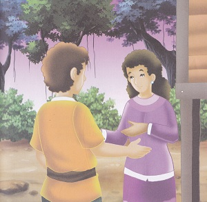
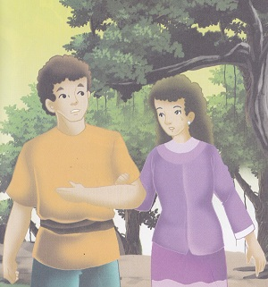
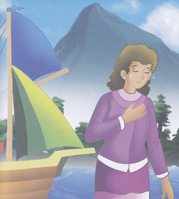
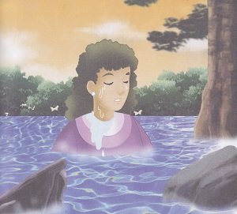

Telaga Biru
( Cerita Rakyat dari Maluku Utara )
Alkisah di wilayah Galela, Halamahera Utara, Maluku Utara terdapat sebuah dusun bernama Lisawa. Dusun tersebut sangta makmur, namun mereka sedikit kesulitan air. Sementara itu, hiduplah sepasang kekasih yang saling mengasihi satu sama lain. Nama sepasang kekasih itu adalah Magohiduuru dan Mojojaru. Magohiduuru adalah pemuda dari keluarga yang sederhana.

Suatu hari, Magohiduuru pergi merantau untuk mencari uang. Magohiduuru pun pamit kepada kekasihnya Mojojaru, ia sangat sedih untuk melepas kekasih tercintanya. Namun, apapun keadannya Magohiduuru sudah bertekad keras untuk merantau. Mereka pun mengikat janji untuk sehidup semati. Ia pun berangkat ke negeri seberang dengan menumpang kapal layar.
Berbulan-bulan dilalui, Mojojaru tampak sangat sedih. Suatu hari, ia mendengar berita bahwa kapal yang ditumpangi Magohiduuru telah kembali ke Lisawa. Mojojaru sangat bahagia mendengar berita itu, namun ternyata kapal itu tidak kembali bersama Magohiduuru. Ia meninggal saat kapal itu sempat terhempas. Mojojaru menjadi tambah sedih dan sangat hancur, ia pun memutuskan untuk mencari tempat untuk menenangkan dirinya.
Mojojaru pun pergi dari rumahnya, sudah berhari-hari keluarganya mencari namun tak ada yang menemukan. Sementara mojojaru sedang bertedu dibawah pohon beringin sambil menangis meratapi kepergian kekasihnya. Air matanya mengalir semakin deras. Air mta itu menggenang dan menenggelamkan batu-batuan tajam yang ada di sekitar pohon beringin. Akhirnya, Mojojaru tenggelam dalam air matanya sendiri. Saat itu juga terbentuklah sebuah telaga. Airnya bening sebening air mata dan berwarna kebiruan. Walaupun berada di bawah pohon tetapi selalu terlihat bersih. Telaga itu diberi nama Telaga Biru. Kini, telaga tersebut menjadi salah satu objek wisata di daerah Halmahera Utara.